<style>body{background:#14100c;color:#a89f92;font-family:sans-serif;margin:0;padding:24px}figure{margin:0 0 26px}figcaption{font-size:13px;color:#e0a94e;margin-bottom:6px}img{width:720px;display:block}</style><figure><figcaption>additive.svg</figcaption>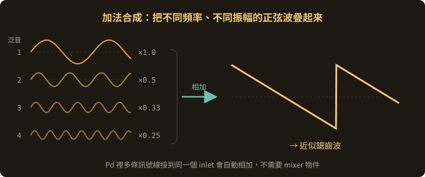</figure><figure><figcaption>adsr.svg</figcaption>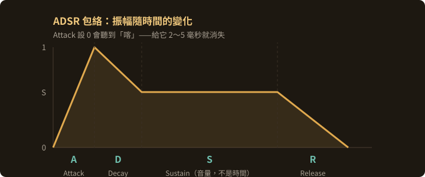</figure><figure><figcaption>delay-family.svg</figcaption>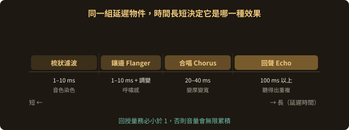</figure><figure><figcaption>execution-order.svg</figcaption>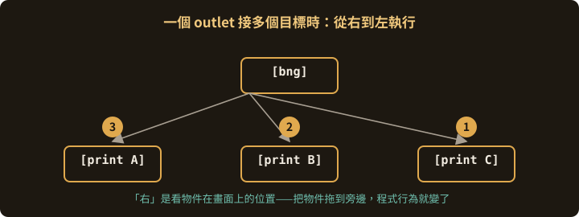</figure><figure><figcaption>fm.svg</figcaption>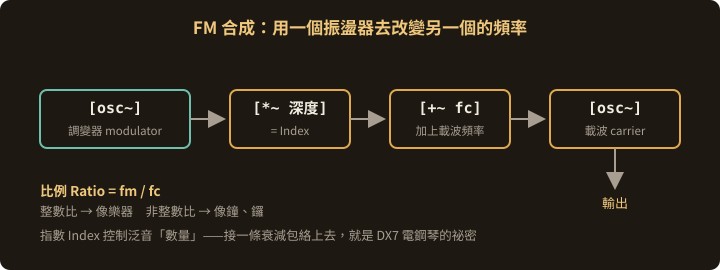</figure><figure><figcaption>signal-vs-message.svg</figcaption>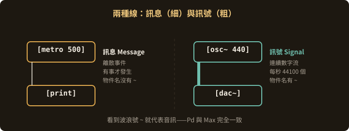</figure><figure><figcaption>subtractive.svg</figcaption>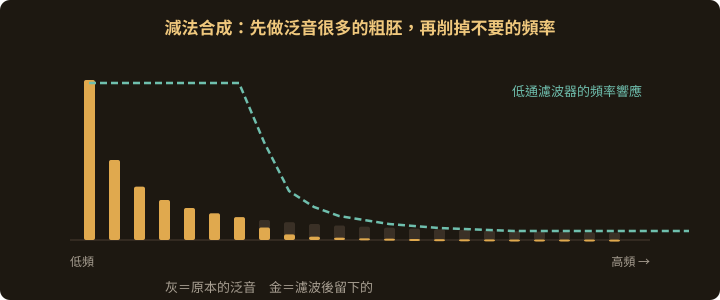</figure><figure><figcaption>timbre-harmonics.svg</figcaption>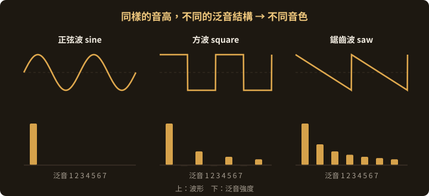</figure><figure><figcaption>vpl-concept.svg</figcaption>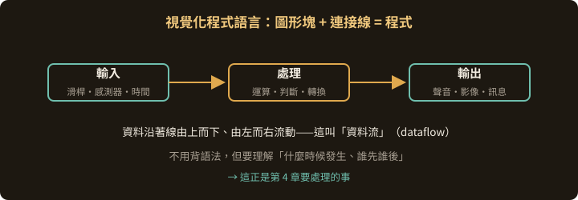</figure><figure><figcaption>wave-anatomy.svg</figcaption>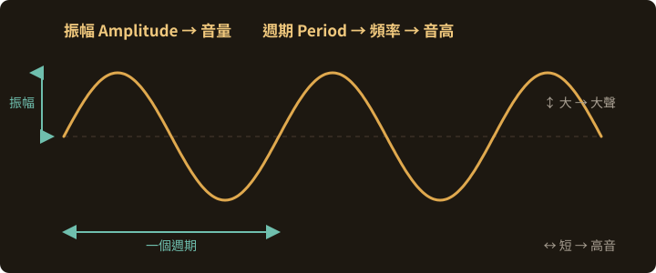</figure><figure><figcaption>waveforms.svg</figcaption>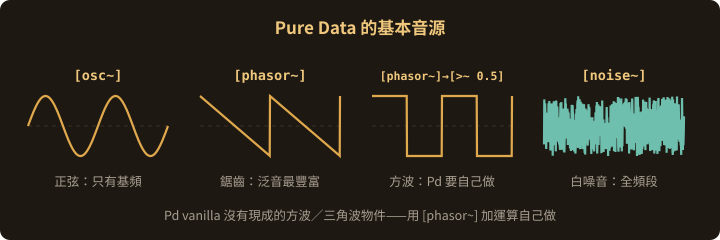</figure>